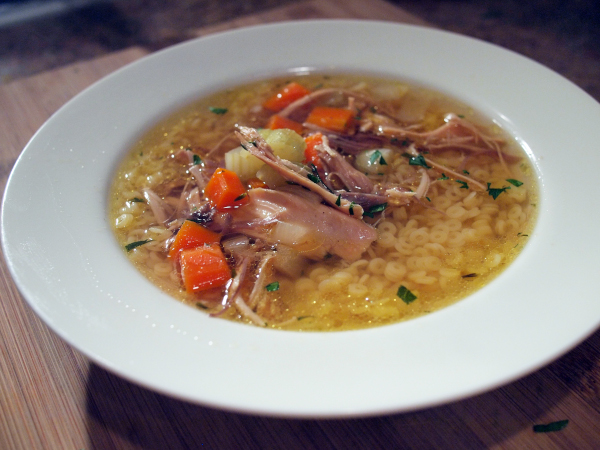

Jon's Chicken Soup

Description
This chicken soup is easy, filling, and you'll get several meals out of one batch.
The secret is the broth, which is made from kitchen scraps and the bones and skin of a store-bought roast
chicken. Fresh herbs and some savory additions increase the umami factor and give the soup depth. It's
even better after being in the fridge for a day or two.
I'm thinking of starting to put tomato paste in it as well, properly browned. But I never have tomato paste
on hand, so try it for yourself. I think it will add even more savory body to the broth.
Ingredients
- kitchen scraps (onion ends, carrot ends, floppy celery, bones from chicken wings, etc.)
- store-bought roast chicken
- 32 oz. chicken bone broth
- poultry herb bouquet (rosemary, sage, thyme)
- 3 carrots, chopped into half-rounds
- 3 celery stalks, chopped into rounds, reserving leaves
- 1 medium onion, diced small
- 1 can stewed tomatoes
- 2 cloves garlic, pressed or minced
- 2 bay leaves
- 1 tbsp chicken-flavored Better Than Buillion
- 1 tbsp Vegemite
- 2 cups wine, if you have it
- black pepper to taste
- the widest egg noodles you can find
- parmesan cheese (optional, but delicious)
Steps
- Add frozen kitchen scraps, herb bouquet, garlic, and wine to a large pot.
- Remove all meat from chicken. Keep dark meat separate from white meat. Add bones, skin, and any
congealed fat to the pot.
- Add just enough water to the pot to cover the scraps and the chicken carcass. Heat to boiling, then
reduce heat and simmer, scraping down sides and rearranging scraps as necessary to stay covered by
water. Simmer for 2-4 hours.
- Using a strainer or colander and a bowl or smaller saucepan, strain the solids from the broth and
discard. Return the broth to the large pot.
- Add Vegemite, black pepper, and Better Than Buillion.
- Add onion, carrots, celery, and stewed tomatoes. Return to boil and then simmer for about 30 minutes,
or until veggies are almost cooked.
- Turn off heat and transfer desired amount of soup to smaller saucepan. Add dark meat to saucepan
and 1 cup egg noodles per person. Add a handful of the reserved celery leaves. (Adding the chicken,
noodles, and celery leaves as needed prevents the chicken from getting tough, the noodles from
absorbing all the liquid from the main portion, and the leaves from getting bitter.)
- Simmer smaller saucepan contents until noodles are tender, about 10 minutes. The vegetables should
also reach their final consistency.
- Serve with parmesan cheese sprinkled on top.
- Refrigerate unused portion when cooled, adding chicken, noodles, and celery leaves each time you
heat up more of the soup.